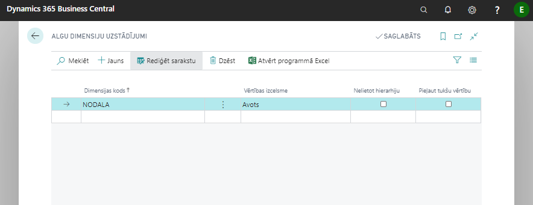
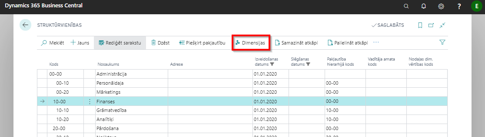
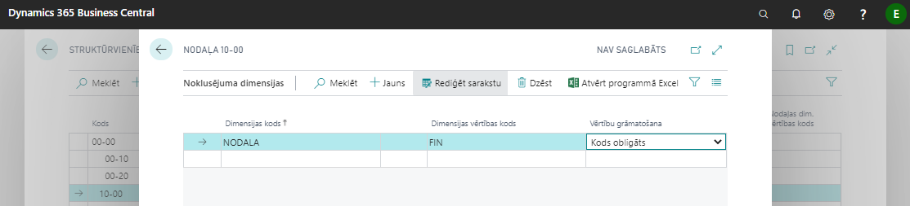
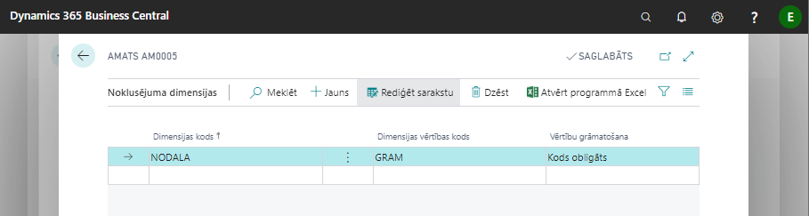
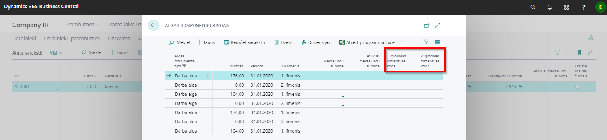

Algu dimensiju uzstādījumi
Tikai tās dimensijas, kas būs norādītās šajos uzstādījumos, tiks lietotas algas aprēķinos, pārējās tiks ignorētas.

| Lauka nosaukums | Apraksts |
|---|---|
| Dimensijas kods | Izvēlas dimensiju no saraksta, kura tiks lietota algas aprēķinos. |
| Vērtības izcelsme | Norāda līmeni, no kurienes tiks ņemta dimensijas vērtība: a) Avots – Prombūtnes reģistrācija, Darba algas komponentes, Algas komponenšu reģistrs; b) Algas komponente – Norādītais dimensijas kods tiek ņemts no algas komponentes; c) Darbinieka amats – Norādītais dimensijas kods tiek ņemts no Darbinieku amata; d) Darbinieks – Augstākais līmenis, norādītais dimensijas kods tiek ņemts no darbinieka kartes. |
| Nelietot hierarhiju | Ja nav atzīme šajā laukā, tad norādītais dimensijas kods tiek meklēts augstākos līmeņos. Ja ir atzīme, tad tikai izvēlētajā līmenī. |
| Pieļaut tukšu vērtību | Pārbauda, vai pēc iepriekš norādītajiem uzstādījumiem dimensijas vērtība nav tukša vērtība. Ja ir atzīme šajā laukā, tad programma nedod kļūdas paziņojumu, ja nevienā no līmeņiem (konkrētā līmenī, ja ir atzīme laukā nelietot hierarhiju) dimensija nav atrasta. |
Dimensijas pie struktūrvienības un amata, lietojot Personāla moduli
Sistēma piedāvā iespēju pievienot pie struktūrvienības, amata n-tās dimensijas. Veidojot personāla rīkojumu (par pieņemšanu, amata maiņu), norādītās noklusējuma dimensijas tiek pievienotas darbinieka amatam.
Dimensiju piešķiršana struktūrvienībai: 

Dimensiju piešķiršana amatam:


Ja pie struktūrvienības norāda dimensiju vērtības un pie attiecīgās struktūrvienības amata norāda vēl citu dimensiju vērtības, tad pie darbinieka amata parāda visas (gan tās, kas bija norādītas pie struktūrvienības, gan tās, kas bija norādītas pie amata).
Tip
Nav ieteicams norādīt vienas un tās pašas dimensijas, bet ar atšķirīgām vērtībām gan pie struktūrvienības, gan amata.
Analīze pa dimensijām
Ērtākai algu analīzes pa dimensijām veikšanai Algas komponenšu rindās iespējams izvēlēties rādīt dimensijas, kuras ir norādītas Virsgrāmatas uzstādījumi.
Algas komponenšu rindas var atvērt algu sarakstā uzklikšķinot uz ienākumu, nodokļu, atvieglojumu u.c. summām, un pēc tam, izvēloties nepieciešamos filtrus.
